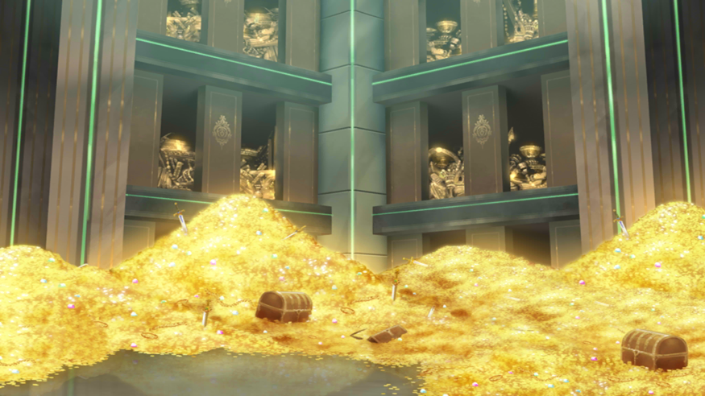
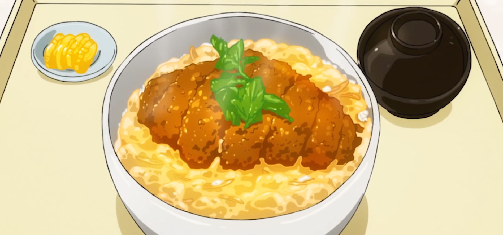

Beast
Caçadores de Feras é um tipo de Caçador especializado em fauna. Existem dois outros tipos conhecidos de Hunter que poderiam ser considerados subcategorias de Beast Hunter.
Treasure

Caçador de Tesouros é um tipo de Caçador que vasculha o mundo em busca de itens raros e valiosos. Um caçador de pedras pode ser considerado um subtipo cuja busca é por pedras preciosas e gemas ou jóias específicas relacionadas.
Ruins
Caçador de Ruínas é um tipo de Caçador dedicado a descobrir, restaurar e preservar ruínas para "reviver" sociedades antigas.
Gourmet

Gourmet Hunter is a type of Hunter whose goals are: to travel the world in search of rare cuisine/exotic foodstuffs and to find and collect rare ingredients customarily obtainable only in remote, inhospitable places